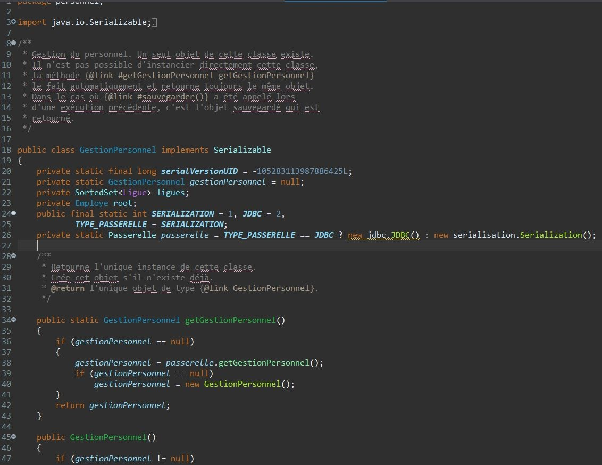

Captures
d'écran
d'écran



Ce projet a été réalisé dans le cadre de la gestion des employés de la Maison des Ligues de Lorraine (M2L). L'objectif était de transformer une application mono-utilisateur en ligne de commande en un système multi-utilisateurs avec différents niveaux d'habilitation.
Transformation de l'application mono-utilisateur en système multi-utilisateurs grâce à une base de données relationnelle. Gestion simultanée de plusieurs utilisateurs et persistance des données.
Conservation et amélioration de l'architecture existante en séparant clairement les couches Présentation, Métier et Accès aux données.



Langage principal pour la logique métier et l'architecture 3-tiers.

Base de données relationnelle pour la persistance multi-utilisateurs.